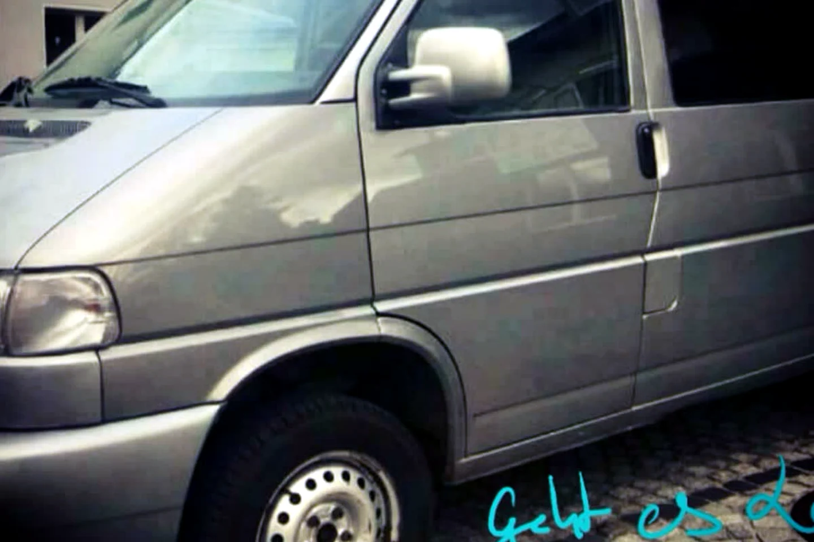

Żegnaj Kolonia, witaj Europa: 6 tygodni, 4 kursy i czyste uczucie życia
Cześć, tu Justine z Tussy Van! 💛 W połowie sierpnia nadszedł moment: van był pełen pasa, kluczyk w zamku stacyjnym, a w Kolonii było po prostu — Wyjazd! Przede mną czekało sześć tygodni absolutnej wolności, która miała mnie zaprowadzić przez kontynent: od Alp, przez kulturalne metropolie Włoch, aż po polskie Morze Bałtyckie. Byłam w trasie aż do początku października — podróży, której nigdy nie zapomnę do końca życia.

To był idealny moment. Późne lato prosto z książki obrazkowej, która obdarzyła mnie aż do października piękną pogodą, niezliczonymi historiami i obrazami, które na zawsze będziesz nosić w sercu.
Jezioro Bodeńskie i bieg z charakterem
Mój pierwszy poważny przystanek zaprowadził mnie na południe, do pięknego Jeziora Bodeńskiego. Zatrzymałem się w idyllicznym Langenargen oraz w fascynującym Muzeum Zeppelina w pobliskim Friedrichshafen. Każdy, kto kiedykolwiek tam był, wie, jak imponujące są te olbrzymy nieba.
Ale nawet wtedy stało się jasne, że ta podróż będzie prawdziwą przygodą. Mój ulepszony T4 — wtedy jeszcze mój pierwszy autobus, zasilany mocnym silnikiem Silnik V6 — nagle nabrał własnej osobowości: piąty bieg całkowicie się pożegnał. Co tam robisz? Odwrócić to? Absolutnie nie! Miałem jeszcze cztery inne. I tak jestem po prostu z maksymalną cztery kursy w całej Europie Schowane. Kto potrzebuje piątego biegu, skoro i tak chce się świętować powolność podróży?
Tak właśnie poszliśmy.
Przewiń — a van jedzie po torach!Kolonia → Jezioro Bodeńskie → Genua · Piza · Florencja · Rzym · Wenecja → Częstochowa · Kraków → Gdańsk nad Morzem Bałtyckim
Bella Italia: Od wybrzeża po kulturowe perełki
Na czterech biegach przekroczyliśmy góry. Włochy przyjęły mnie z otwartymi ramionami i z tą niezrównaną łatwością. Moja trasa była absolutnym marzeniem:
- Genua — dumne miasto portowe z wąskimi uliczkami.
- Piza — oczywiście obowiązkowego widoku na Krzywą Wieżę nie można było przegapić.
- Florencja — serce Toskanii, sztuka i kuchnia na każdym rogu.
- Rzym — Wieczne Miasto przytłoczyło mnie swoją tysiącletnią historią.
- Wenecja — magiczne miasto w wodzie jako zwieńczenie, romantyczne zakończenie mojej włoskiej przygody.
Kurs Północny Wschód: Kultura i Morze w Polsce
Po atmosferze śródziemnomorskiej zmieniłem kierunek i skierowałem się do Polski. Różnorodność, jaką oferuje ten kontynent, jest po prostu nie do pomyślenia. Pierwszym przystankiem było historyczne miejsce pielgrzymkowe Częstochowa ze słynną Czarną Madonną (Mój raport na ten temat →), a następnie piękne Kraków — miasto pełne życia, młodej kultury i imponującej architektury (moje krakowskie najważniejsze →). Ale to przyciągnęło mnie jeszcze wyżej, podążając za wezwaniem Północy, aż do wybrzeża Morza Bałtyckiego Gdańsk (Gdańsk). Przeczytałeś moją szczerą opinię o Gdańsku, Tricity i bursztynowym złocie tutaj →
Prawdziwe szczęście obozowicza
Co pozostaje po sześciu tygodniach i tysiącach kilometrów? To nie tylko słynne miejsca. To uczucie przesuwania się rano przez przesuwane drzwi T4 i patrzenia prosto na lśniące morze. To spokój, gdy stoisz wieczorem pośrodku lasu, wdychasz zapach natury i podziwiasz sylwetkę gór w świetle wieczoru.
Ta podróż pokazała mi, jak bogaty jest ten kontynent w krajobrazy, kultury i wrażenia. I że do największego szczęścia w życiu czasem wystarczy cztery kursy i odpowiednie wsparcie. Europa, byłaś piękna!
Do zobaczenia i szerokiej drogi,
Wasza Tussy 💛